An essay compiled from primary sources · August 2026
Steve Jobs applied one design philosophy to everything he touched: his empty living room, his unmarked car, his hundred turtlenecks, and Apple, from the circuit board nobody sees to the glass staircase everybody climbs.
In June 1983 a 28-year-old Steve Jobs stood under Eero Saarinen's tent in Aspen and told a room full of designers what Apple was aiming at: "we're really shooting for Museum of Modern Art quality."15 He got it. MoMA now holds the iMac, the iPod, and the G4 Cube; SFMOMA holds the 1984 Macintosh.4749
The standard did not stop at the products. He ran the same test on his washing machine, his sofa (he went years without one), his car, his clothes, his stereo, the insides of his computers, the boxes they shipped in, the stone under his stores' floors, and the boat he knew he might not live to board. This page collects that record in one place: the houses, the objects, the one piece of art he owned, and Apple itself, hardware to software to website to building.
Rules of the page: every quotation is verbatim from a named source, linked in the sources. Where the record disagrees, the dispute is shown, not smoothed over. Ten popular stories that failed checking are listed near the end, because a fan deserves the real ones.
01 · Philosophy
It starts with a fence in Mountain View. Paul Jobs, a machinist, taught his son that the hidden parts of a job deserve the same care as the visible ones. Jobs told his biographer: "He loved doing things right. He even cared about the look of the parts you couldn't see."15 Jobs restated the lesson for the rest of his life, most completely in 1985:
"When you're a carpenter making a beautiful chest of drawers, you're not going to use a piece of plywood on the back, even though it faces the wall and nobody will ever see it. You'll know it's there, so you're going to use a beautiful piece of wood on the back. For you to sleep well at night, the aesthetic, the quality, has to be carried all the way through."
Steve Jobs, Playboy, February 19851
The second document arrived on the day Apple incorporated. On January 3, 1977, Mike Markkula wrote a one-page memo called The Apple Marketing Philosophy. Three headings: Empathy ("We will truly understand their needs better than any other company"), Focus ("In order to do a good job of those things we decide to do we must eliminate all of the unimportant opportunities"), and Impute:
"People DO judge a book by its cover. We may have the best product, the highest quality, the most useful software etc.; if we present them in a slipshod manner, they will be perceived as slipshod; if we present them in a creative, professional manner, we will impute the desired qualities."
Mike Markkula, January 3, 1977, transcribed from the facsimile in the Steve Jobs Archive.96 Decades later, Jobs on the iPhone box: "we want that tactile experience to set the tone for how you perceive the product. Mike taught me that."96
The third input was Aspen. From 1981 Jobs attended the International Design Conference on a Colorado campus that Herbert Bayer, the last surviving Bauhaus master, had designed down to the signage.16 By his 1983 talk he had picked a side in the fight between two aesthetics, and named names:
"What we're going to do is make the products high-tech, and we're going to package them cleanly so that you know they're high-tech. We will fit them in a small package, and then we can make them beautiful and white, just like Braun does with its electronics."
"We will make them bright and pure and honest about being high-tech, rather than a heavy industrial look of black, black, black, black, like Sony. […] So that's our approach. Very simple, and we're really shooting for Museum of Modern Art quality."
Steve Jobs, International Design Conference in Aspen, June 15, 1983, as quoted by Walter Isaacson.1516 The talk survived because one attendee kept his cassette for 29 years; the audio is on the Internet Archive.11 The MoMA sentence appears only in Isaacson's book, so it is quoted here as his transcription, not as an independently attested line.
Around these sit the named heroes. Edwin Land of Polaroid, who "saw the intersection of art and science and business and built an organization to reflect that"; Jobs called him "a national treasure" in 19851 and was still working the idea at the end of his life: "Edwin Land of Polaroid talked about the intersection of the humanities and science. I like that intersection. There's something magical about that place."15 And Zen, through his teacher Kobun Chino Otogawa: "I have always found Buddhism, Japanese Zen Buddhism in particular, to be aesthetically sublime. The most sublime thing I've ever seen are the gardens around Kyoto. I'm deeply moved by what that culture has produced, and it's directly from Zen Buddhism."15
In operation, the philosophy meant subtraction. In 1997, answering a developer angry about a killed technology, he said: "Focusing is about saying no. And you've got to say no, no, no." The payoff, in the same answer: "the result of that focus is going to be some really great products where the total is much greater than the sum of the parts."8 A year later he gave BusinessWeek the version everyone quotes, and its context is usually forgotten: he was describing Apple's org chart, not a product.
"That's been one of my mantras — focus and simplicity. Simple can be harder than complex: You have to work hard to get your thinking clean to make it simple. But it's worth it in the end because once you get there, you can move mountains."
Steve Jobs, BusinessWeek, May 25, 19983
And the definition itself, stated twice. To Wired in 1996: "Design is a funny word. Some people think design means how it looks. But of course, if you dig deeper, it's really how it works."2 To Fortune in 2000, at full depth:
"In most people's vocabularies, design means veneer. It's interior decorating. It's the fabric of the curtains and the sofa. But to me, nothing could be further from the meaning of design. Design is the fundamental soul of a man-made creation that ends up expressing itself in successive outer layers of the product or service."
Steve Jobs, Fortune, January 24, 2000.4 This passage is routinely misattributed to the New York Times' 2003 iPod story; the Times piece carries the shorter "It's not just what it looks like and feels like. Design is how it works."6
02 · Houses
The clearest photograph of Jobs' design standard has almost nothing in it. On December 15, 1982, TIME photographer Diana Walker shot the 27-year-old multimillionaire sitting cross-legged on his living-room floor. The room contains a Tiffany lamp, a stack of records, and a stereo. His retrospective caption: "This was a very typical time. I was single. All you needed was a cup of tea, a light, and your stereo, you know, and that's what I had."21 The photograph is copyrighted; see it at the Steve Jobs Archive or in Walker's TIME retrospective.1920
Where was it taken? Getty's caption and the Steve Jobs Archive say Woodside. But Jobs bought the Woodside mansion in 1984, two years after the shoot, and Isaacson places him in 1983 in a Los Gatos house containing exactly the photo's inventory: "a Tiffany lamp, an antique dining table, and a laser disc video attached to a Sony Trinitron, but foam cushions on the floor rather than sofas and chairs."1522 The chronology favors Los Gatos; the captions say Woodside. Treat the location as disputed.
The emptiness was the philosophy running in his own home: he refused to own anything he was not certain about. Hosting John Sculley for breakfast in 1983 he apologized: "I'm sorry I don't have much furniture. I just haven't gotten around to it."15 After he married Laurene Powell, the problem became a shared research project. "We spoke about furniture in theory for eight years," she told Isaacson. "We spent a lot of time asking ourselves, 'What is the purpose of a sofa?'"15
Appliances got the same treatment. When the family needed a washing machine, they weighed American against European designs at the dinner table, every night, for two weeks: cycle time against water use, detergent residue, how long the clothes would last. Jobs told Wired about the outcome with more excitement than he showed for most computers:
"We ended up opting for these Miele appliances, made in Germany. […] They are really wonderfully made and one of the few products we've bought over the last few years that we're all really happy about. These guys really thought the process through. They did such a great job designing these washers and dryers. I got more thrill out of them than I have out of any piece of high tech in years."
Steve Jobs, Wired, February 19962
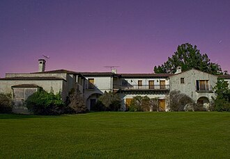
In 1984, weeks after launching the Macintosh, Jobs paid a reported $2 million for six Woodside acres and a 17,000-square-foot, 14-bedroom Spanish Colonial Revival mansion built in 1926 for copper magnate Daniel Jackling by George Washington Smith, the architect who invented the California Mediterranean look.2326 He lived in it for about a decade and furnished almost none of it: a mattress, a chest of drawers, a card table, folding chairs. The kitchen was the one finished room.2223
He did not hate houses. He hated this house. He called it "one of the biggest abominations of a house I've ever seen" and explained the twenty-year delay with "I bought [the property] to tear down the house, [but] I've been very busy the last 20 years."2423 Preservationists sued and won in 2006; Jobs lost the appeal in 2007, reapplied in 2008, and won in 2009. The demolition permit issued February 7, 2011, bulldozers arrived February 14, and the house was flat within days.2325 The replacement he planned was a 6,000-square-foot house by Bohlin Cywinski Jackson, the firm behind the Apple Stores. He died that October. Nothing was built.23
The family house Jobs loved is the opposite argument. From the early 1990s he lived at a corner of old Palo Alto in a 1930s brick cottage by Carr Jones, a self-taught local designer who built in the storybook style from reclaimed material: used brick, timber from telephone poles, kitchen beams that had served as concrete molds for the Golden Gate Bridge. Jobs admired exactly that: "He was a careful craftsman who was self-taught. He cared more about being inventive than about making money."15 The house had no wall, no guard, and a back door left unlocked in the daytime. Bill Gates, then building 66,000 square feet outside Seattle, visited and asked: "Do all of you live here?"15
Perfectionism still ran the schedule. A kitchen remodel scoped at four months took sixteen because Jobs kept redoing the design; his sister Mona Simpson said at his memorial that the family cooked on a hotplate in the garage while Pixar's whole headquarters went up in half the time, and after that "the bathrooms stayed old."18 On Halloween the house handed out organic chocolate and carrot juice, and after October 5, 2011, its sidewalk filled with flowers and apples with single bites taken out of them.2228
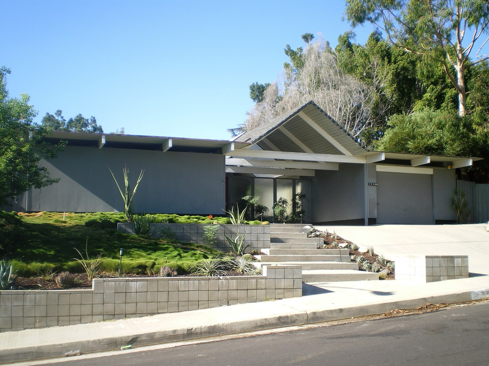
The origin story he told about houses needs one correction. Jobs credited Joseph Eichler's modernist tracts for his idea of good design at mass-market prices: "Eichler did a great thing. His houses were smart and cheap and good. They brought clean design and simple taste to lower-income people. […] I love it when you can bring really great design and simple capability to something that doesn't cost much. It was the original vision for Apple."1516 But his childhood house at 286 Diablo Avenue was a Mackay Homes "likeler," probably drawn by Eichler's own architects Anshen and Allen, on a conventional foundation with forced-air heat. Joseph Eichler's son Ned looked at photographs and ruled: "That house is not an Eichler."27 A real Eichler tract sat three blocks away; the design lesson survives the correction.
One more property completes the set: in the mid-1980s Jobs bought the top two floors of the San Remo's north tower on Central Park West and hired James Ingo Freed of I. M. Pei's firm to rebuild them. The renovation ran so long that the co-op board later imposed a six-month limit on all renovations, after complaints about Jobs' and Steven Spielberg's endless projects. He never moved in, and sold the apartment to Bono for a reported $15 million.1529
03 · Objects
Jobs' personal property was a short, hard-edited list. Each item on it was either the best thing he could find or a design decision in disguise.
On an early-1980s trip to Japan, Jobs asked Sony's Akio Morita why factory workers wore uniforms, heard how postwar clothing scarcity had turned into corporate bonding, and decided he wanted the same for Apple. Sony's jackets were by Issey Miyake, so Jobs commissioned Miyake vests for Apple and presented them to staff: "Oh man, did I get booed off the stage. Everybody hated the idea."17 He kept the designer and applied the idea to himself instead: "So I asked Issey to make me some of his black turtlenecks that I liked, and he made me like a hundred of them." He showed Isaacson the stack in his closet: "That's what I wear. I have enough to last for the rest of my life."17 The rest of the system: Levi's 501s worn to holes,36 gray New Balance runners (already on his feet at Aspen in 1983; the 991 and 992 came later),12 and, from his 1997 return onward, round rimless Lunor Classic Rund glasses.38 A uniform is design applied to the decision itself: one good answer, then never the question again.
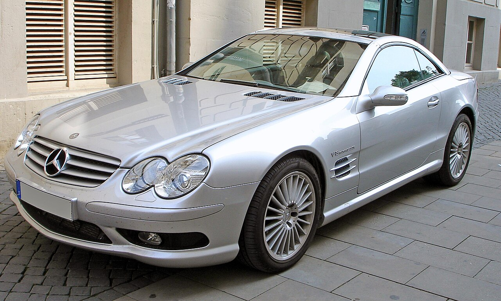
The silver Mercedes SL 55 AMG with no license plates was Silicon Valley's favorite riddle for years. The answer, told after his death by former Apple security executive Jon Callas: California allowed up to six months before plates had to be fitted, so Jobs arranged with his leasing company to swap the car in the sixth month of every lease, always for an identical silver SL 55.30 The DMV both confirmed the six-month window (Vehicle Code 4456) and denied it was a loophole, since real plates arrive by mail in about thirty days.3132 The legislature settled the argument by ending the practice: AB 516, in force January 1, 2019, puts a numbered temporary plate on every new car at the point of sale, and coverage called it the closing of the "Steve Jobs loophole."33 Single-origin source The story traces to one named eyewitness in one outlet, then corroboration by the DMV's statute and the later law.
Before the Mercedes there was a Porsche 928, which doubled as a design reference for the Macintosh, and a 1966 BMW R60/2 motorcycle he rode to work without a helmet; Charles O'Rear photographed him on it for National Geographic in 1982.34 The bike's most important parking spot was indoors: Jobs put it in the atrium of Bandley 3, the Macintosh building, next to a Bösendorfer grand piano, objects "that Jobs felt would inspire an obsession with lapidary craftsmanship."15 The famous piano and motorcycle lived at Apple, not in his living room.
The one indulgence in the empty 1982 living room was the hi-fi, and in 2014 Wired identified every component from Walker's photograph: Acoustat Monitor 3 electrostatic speakers, a Threshold FET-One preamp, Threshold STASIS-1 monoblocks, a Denon TU-750 tuner, a Michell GyroDec turntable. He later moved up to six-figure Wilson Audio speakers, and kept no CD player at home. Neil Young: "Steve Jobs was a pioneer of digital music. But when he went home, he listened to vinyl."35
The watch on his wrist in Norman Seeff's 1984 lotus-position Macintosh portrait was a Seiko "Chariot," reference 6431-6030, 33 mm, quartz. His house manager consigned it to Heritage Auctions in February 2016; fourteen bidders took it to $42,500, and Seiko reissued the model with Nano Universe the next year in a numbered run of 1,982 pieces.37
The Sony story has a turn most retellings skip. Young Jobs haunted the Sony sales office next to Apple's first rented office and fondled the brochures for their design details; Morita handed him one of the first Walkmans and Jobs took it apart to study the fit of every piece.16 But by 1983 he was on stage in Aspen declaring the Sony aesthetic dead, and when he toured an actual Sony factory that year, Isaacson records the verdict: "To Jobs, it looked messy and inelegant. A lot of the work was done by hand. He hated it."15 The admiration had moved to Braun, and to a German designer whose principles read like Apple's future spec sheet.
From 2007 Jobs met Philippe Starck roughly monthly, reportedly in day-long Sunday sessions in Palo Alto, designing a 78.2-meter aluminum yacht. When Starck presented the first concept, Jobs pushed it further: "I think you should make it all out of glass."40 The main cabin got glass walls forty feet long and ten feet high, engineered by the same structural-glass specialists as the Apple Stores; because Lloyd's would not certify load-bearing glass at sea, a hidden ten-tonne aluminum frame carries fifteen tonnes of glass.1540 The wheelhouse was fitted with a row of 27-inch iMacs.39 He kept designing it through his final illness and told Isaacson why:
"I know that it's possible I will die and leave Laurene with a half-built boat. But I have to keep going on it. If I don't, it's an admission that I'm about to die."
Steve Jobs to Walter Isaacson, 2011.15 Feadship unveiled Venus at Aalsmeer on October 28, 2012, thirteen months after his death.41
04 · Collections
For a billionaire aesthete, Jobs owned almost no art, and the "almost" is precise. Isaacson's wording is exclusionary: "The one piece of art that Jobs bought for the vaulted-ceiling living room was an Ansel Adams print."15 It was an oversized mural print of Winter Sunrise, Sierra Nevada, from Lone Pine, California (1944), one Adams had made for his own daughter, who later sold it.42 When a housekeeper wiped it with a wet cloth, Jobs tracked down a former Adams collaborator to strip a layer and restore it.15 He did not collect Adams; he chose one Adams, then defended it. Adams appears once more in the record, as a face Jobs picked for the Think Different campaign.
The other art object he lived with was the Tiffany lamp, and he turned it into a teaching aid. During the Macintosh's development he took the whole team to a Louis Comfort Tiffany exhibition, because Tiffany proved that real art could be mass-produced. Engineer Bud Tribble remembered the conclusion: "We said to ourselves, 'Hey, if we're going to make things in our lives, we might as well make them beautiful.'"15 Venue disputed Isaacson says the Metropolitan Museum in Manhattan; the Steve Jobs Archive says San Francisco's de Young.12 Neither names a dated exhibition.
His private object taste ran to a small modernist canon: "He had a Richard Sapper lamp, which he admired, and he also liked the furniture of Charles and Ray Eames and the Braun products of Dieter Rams."15 Rams was more than taste. In 1982 Jobs ran a contest "to choose a world-class designer who would be for Apple what Dieter Rams was for Braun"; frog design's Hartmut Esslinger won it, and the Snow White design language followed.15 Rams returned the compliment in 2011: "Without doubt there are few companies in the world that genuinely understand and practise the power of good design in their products and their businesses."45
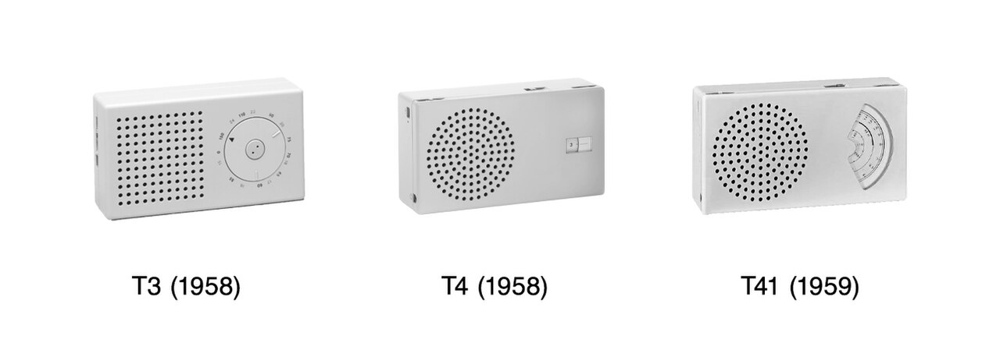
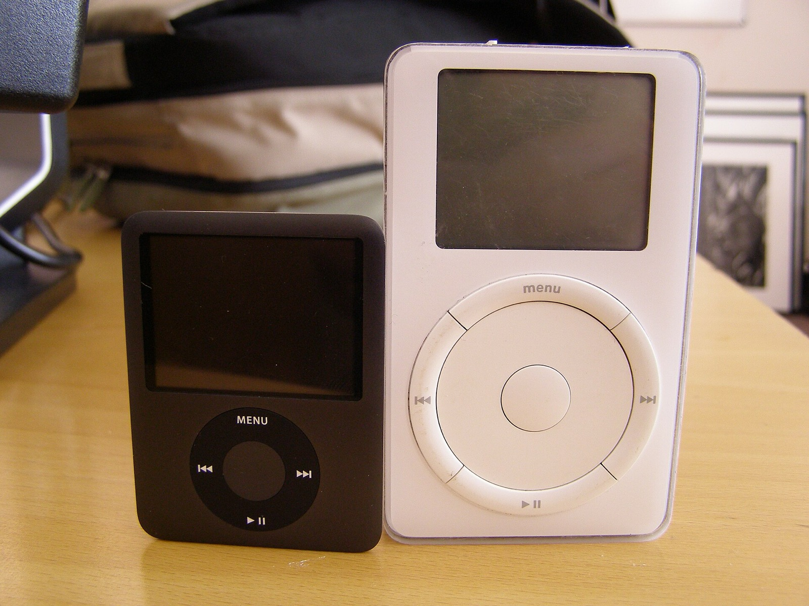
The rest of his collection was places and teachers rather than possessions. Kobun Chino Otogawa, the Zen teacher who later held the title Spiritual Director at NeXT and married Steve and Laurene at Yosemite in 1991.44 Kyoto, which he gave each of his children as a coming-of-age trip; on the 2010 family visit they stayed at the Tawaraya ryokan and walked Saihō-ji's moss gardens.15 Reed College's calligraphy room, where a Trappist-monk-turned-teacher, Robert Palladino, carried Lloyd Reynolds' fusion of Zen and William Morris craft into the class a dropout wandered into; Reed's own history traces the lineage forward to "the computer language interface initiated by Steve Jobs."43 And the Whole Earth Catalog, whose farewell line he turned into a commencement benediction: "Stay hungry. Stay foolish."7
"It comes down to trying to expose yourself to the best things that humans have done, and then try to bring those things into what you are doing."
Steve Jobs, as published by the Steve Jobs Archive.12 The same sentence opens his Picasso passage in the 1996 Triumph of the Nerds interview.13
The museums eventually answered the 1983 Aspen boast. The canonized Apple objects are mostly from his second act: the iMac, the iPod, the G4 Cube at MoMA; the 1984 Macintosh at SFMOMA.4749 From the era he was speaking in, the object that made it into MoMA is a notebook: Susan Kare's 1982 icon sketchbook, ink on graph paper, one square per pixel, jointly acquired with SFMOMA in 2015.48 The calligraphy class produced, forty years later, a museum piece that is literally a manuscript.
05 · Hardware
Apple hardware under Jobs is one idea iterated for thirty years: the computer is a consumer object, so it must be quiet, approachable, and finished on every surface, including the ones no customer will ever see.
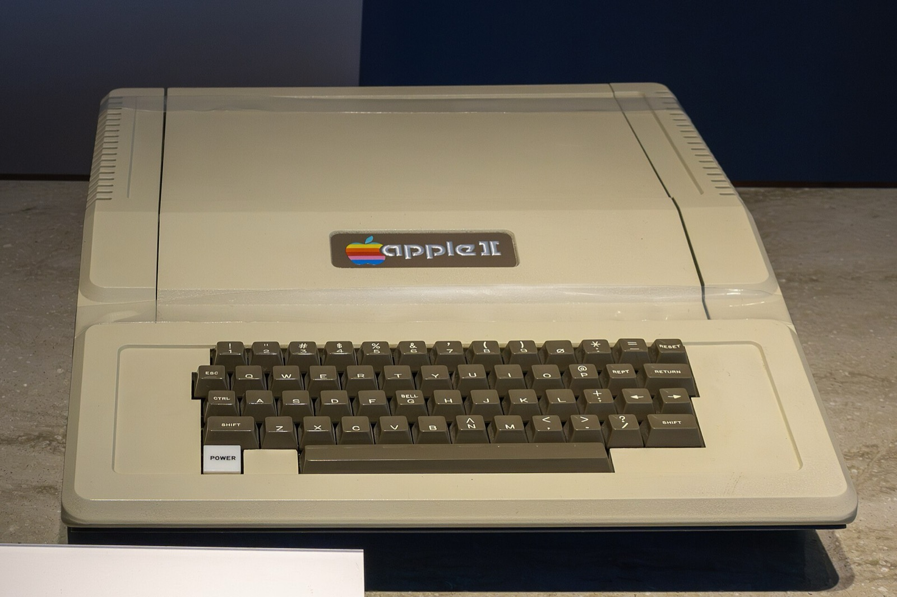
For the Apple II, Jobs hired consultant Jerry Manock to wrap Wozniak's board in molded plastic instead of hobbyist sheet metal, and insisted the machine be silent, which pushed Rod Holt to a switching power supply that needed no fan.6553 The 1977 brochure carried the headline that became Apple's standing mantra: "Simplicity is the ultimate sophistication."52 (Everyone says Leonardo da Vinci; quote researchers have found no trace of it in his work, and the earliest da Vinci attribution dates to 2000.51 Its verified home is the brochure.)
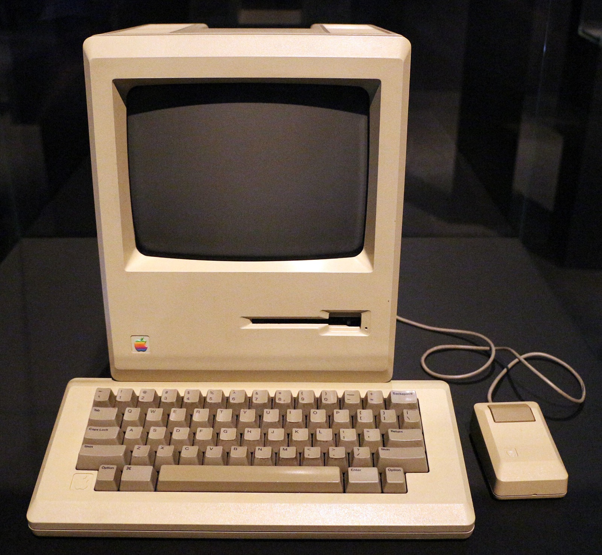
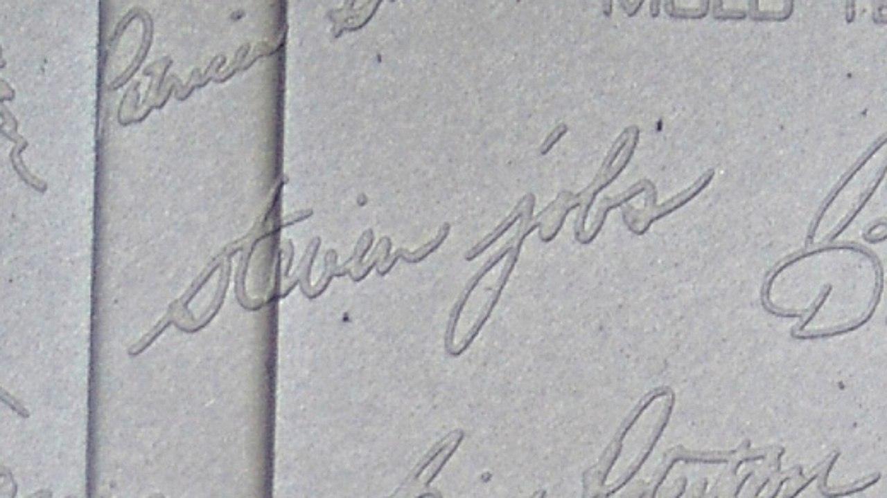
The Mac's case was argued in car metaphors. When a colleague proposed Ferrari lines, Jobs shot back: "Not a Ferrari, that's not right either. It should be more like a Porsche!" (he was driving a 928 at the time), and he paced the parking lot studying Mercedes details: "Over the years, they've made the lines softer but the details starker. That's what we have to do with the Macintosh."5415 A phone book slammed on a table set the maximum footprint. One weekend he saw a Cuisinart at Macy's and made the team spend a week on a food-processor-inspired case before conceding the detour.54
Two ceremonies fixed the philosophy in plastic and copper. On February 10, 1982, the team held a signing party: every member's signature was engraved into the mold, to appear inside every case. Andy Hertzfeld: "Since the Macintosh team were artists, it was only appropriate that we sign our work."55 Jobs' version was shorter: "Real artists sign their work."15 And in mid-1981 he critiqued the circuit board itself: "That part's really pretty. But look at the memory chips. That's ugly. The lines are too close together." When a new engineer objected that nobody would ever see the board, Jobs answered, "I'm gonna see it! I want it to be as beautiful as possible, even if it's inside the box." Apple spent about $5,000 on a prettier layout, it did not work reliably, and the team reverted, but the doctrine outlived the defeat.56
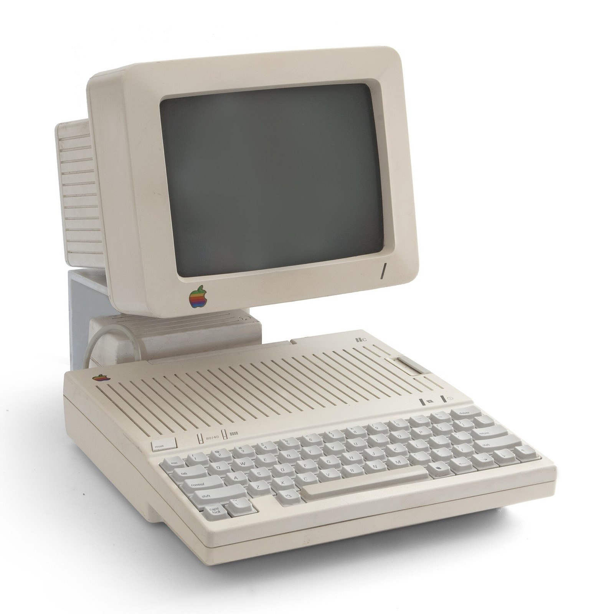
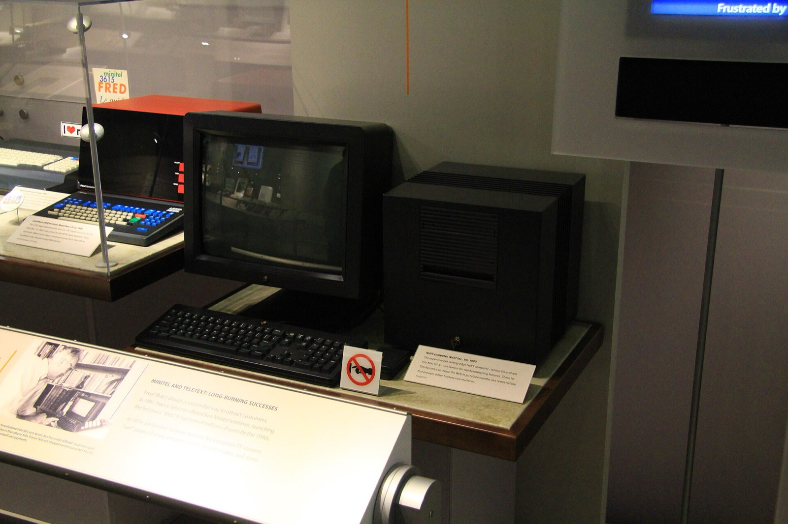
Esslinger's Snow White language, which debuted on the Apple IIc in 1984, was Jobs' Braun ambition made into a rulebook: zero-draft enclosures, 2 mm lines spaced 10 mm apart, minimal corner radii, an inset three-dimensional logo.57 At NeXT the rulebook became extremism. The computer was a perfect one-foot magnesium cube with no draft angles, which meant the sides could not be pulled from a normal mold: they were cast separately in $650,000 tooling in Chicago and welded. Jobs flew out to make the die caster restart over a hairline mold mark, bought a $150,000 sanding machine to erase seams, and had the matte black finish applied to the inside of the case, where only repair technicians would see it.1558 The logo came from Paul Rand for a flat $100,000 with no alternatives offered: "I will solve your problem, and you will pay me. You can use what I produce, or not, but I will not do options, and either way you will pay me."1559
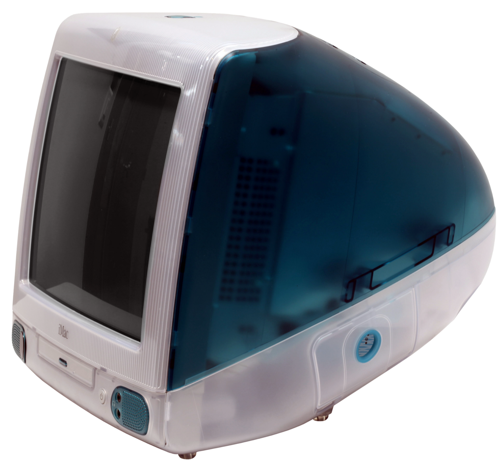
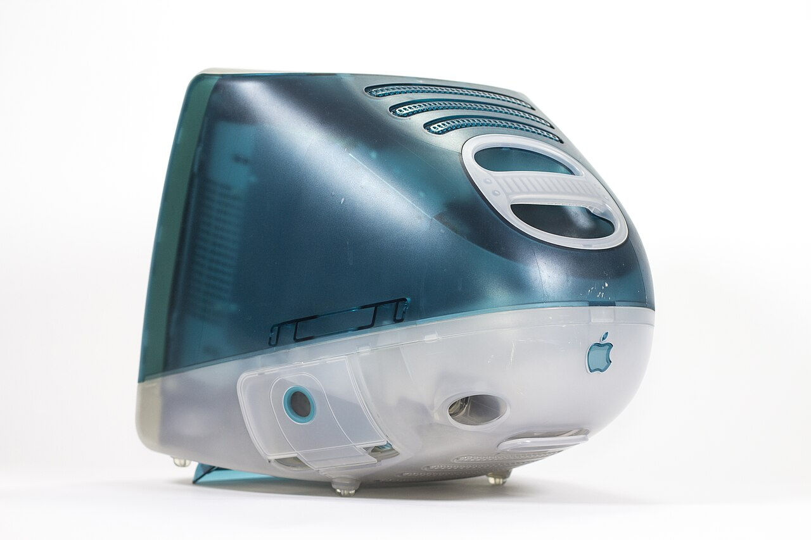
The 1998 iMac opened the Jobs-and-Ive era with a gumdrop of translucent Bondi Blue plastic; Ive's team visited a jelly-bean factory to learn how to make color inviting, and each case cost three times the industry norm. Jobs approved it without a cost study.15 Translucency also weaponized an old fixation: the internal layout now showed. The handle existed for feelings, not carrying. Ive: "If you're scared of something, then you won't touch it. I could see my mum being scared to touch it. So I thought, if there's this handle on it, it makes a relationship possible. It's approachable. It's intuitive. It gives you permission to touch."15 On stage Jobs circled the machine with a camera and said, "The back of this thing looks better than the front of the other guys, by the way," and, of the whole object: "It looks like it's from another planet. A good planet. A planet with better designers."113
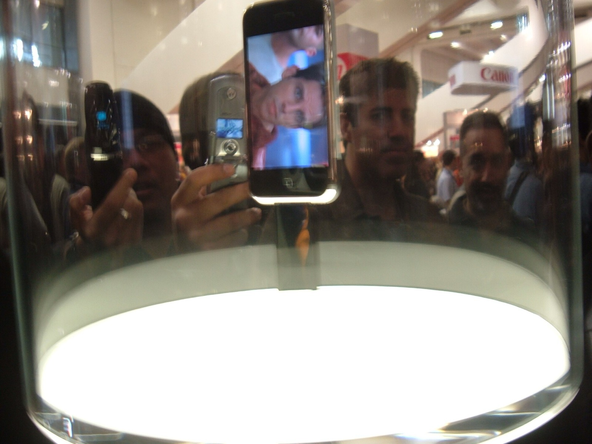
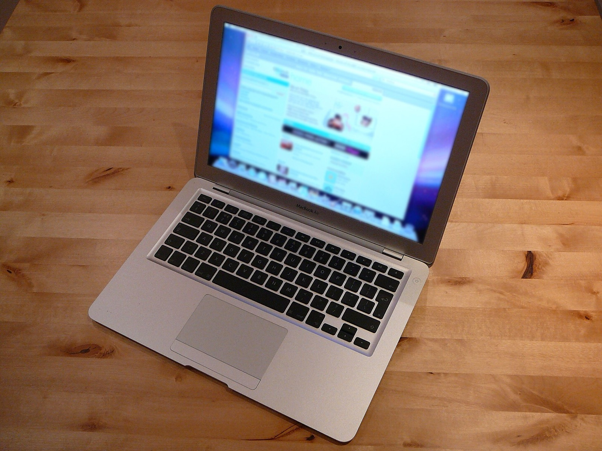
The 2001 iPod compressed the philosophy into a sentence of marketing: "1,000 songs in your pocket."60 Phil Schiller proposed the scroll wheel, with menus that accelerate as you spin.61 The machine shipped without an off switch, because Jobs "deemed" power buttons "inelegant"; the device just went quiet.15
For the iPhone, the decisive anecdote is a supplier call. Told Apple needed a chemically hardened glass Corning had shelved decades earlier, and needed it in volume within six months, CEO Wendell Weeks protested: "We don't have the capacity. None of our plants make the glass now." Jobs, per Isaacson: "Don't be afraid. […] Yes, you can do it. Get your mind around it. You can do it." Weeks: "We did it in under six months. We produced a glass that had never been made." The one memento in Weeks' office is a message from Jobs sent on iPhone launch day: "We couldn't have done it without you."15 Two versions In 2025 Weeks retold the exchange more sharply ("You're afraid… I'm going to eviscerate you"); fourteen years separate the two recollections of the same call.62
The MacBook Air came out of an interoffice envelope on stage in January 2008,63 and that October Apple rebuilt its laptops around the unibody: a single block of aluminum carved by thirteen CNC milling operations, with a sleep light that shines through metal milled thin enough to become translucent, invisible when off.64 The back of the fence again, this time executed by machine tools.
06 · Software
Jobs did not write software. He edited it, pixel by pixel, and the edits are documented by the people who received them.
In December 1979 Jobs led an Apple delegation into Xerox PARC and saw the bitmapped Alto interface. The access was purchased, not burgled: Xerox's venture arm had invested in Apple pre-IPO in exchange for the look inside, and Apple's Lisa and Macintosh projects already specified bitmapped, multi-font screens before the visit.66 What the visit supplied was conviction. Jobs in 1996: "When I went to Xerox PARC in 1979, I saw a very rudimentary graphical user interface. It wasn't complete. It wasn't quite right. But within 10 minutes, it was obvious that every computer in the world would work this way someday."2
"I learned about serif and sans-serif typefaces, about varying the amount of space between different letter combinations, about what makes great typography great. […] Ten years later, when we were designing the first Macintosh computer, it all came back to me. And we designed it all into the Mac. It was the first computer with beautiful typography."
Steve Jobs, Stanford commencement, June 12, 20057
The Mac shipped proportional typefaces, and even the font menu got a Jobs review. Susan Kare and Andy Hertzfeld had named the fonts after commuter-rail stops outside Philadelphia; Jobs ruled, "cities are OK, but not little cities that nobody's ever heard of. They ought to be WORLD CLASS cities!" So: Chicago, New York, Geneva, London, San Francisco, Toronto, Venice.67
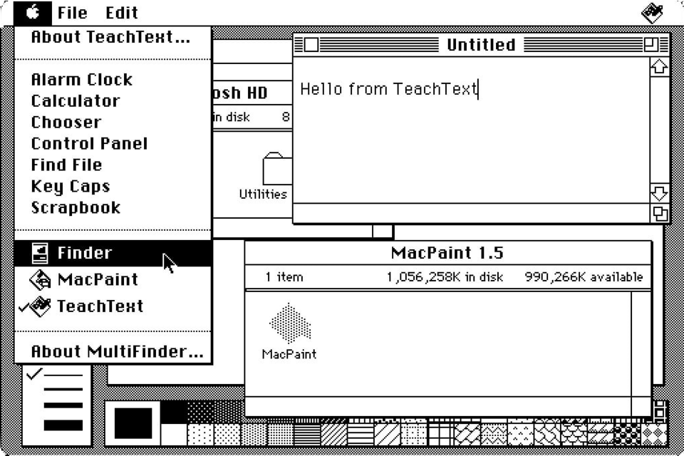
Kare drew the interface before tools existed to draw it with: pencil on graph paper, one square per pixel, hand-converted to hex.75 "I loved the puzzle-like nature of working in sixteen-by-sixteen and thirty-two-by-thirty-two pixel icon grids, and the marriage of craft and metaphor," she said.76 When Jobs banned the Apple logo from the shortcut menus ("We're taking the Apple logo in vain!"), Kare paged through a symbol dictionary and found a looped square used on Nordic signs for places of interest. It is on every Mac keyboard today; Unicode names it PLACE OF INTEREST SIGN, and the shape appears on a Gotland picture stone carved around 400-600 AD.6869 Her survival strategy in reviews became Apple folklore: "I learned to never just show Steve something and ask, 'Do you like this?' because he'd invariably say no. […] The workaround was to come up with several options and ask him which one he liked."75
Round rects, May 1981. Bill Atkinson demoed blazing-fast ovals; Jobs demanded rounded rectangles. Atkinson refused, twice, until Jobs walked him around the block pointing: "Rectangles with rounded corners are everywhere! Just look around this room!" A no-parking sign ended the argument. RoundRects went into QuickDraw and, within months, everywhere.70
The calculator, February 1982. Chris Espinosa iterated a calculator design daily against Jobs' notes ("Well, it's a start, but basically, it stinks") until he stopped iterating and shipped a tool instead: "the Steve Jobs Roll Your Own Calculator Construction Set," every visual attribute on a menu. Jobs fiddled for ten minutes; his settings shipped as the Mac calculator through OS 9, seventeen years.71
Boot time, August 1983. Jobs to engineer Larry Kenyon: "Well, let's say you can shave 10 seconds off of the boot time. Multiply that by five million users and thats 50 million seconds, every single day. […] So if you make it boot ten seconds faster, you've saved a dozen lives. That's really worth it, don't you think?" (The typo is folklore.org's.) The team found more than ten seconds.72 The slogan over all of it came from the January 1983 retreat, first of the "Sayings from Chairman Jobs": Real artists ship.7374
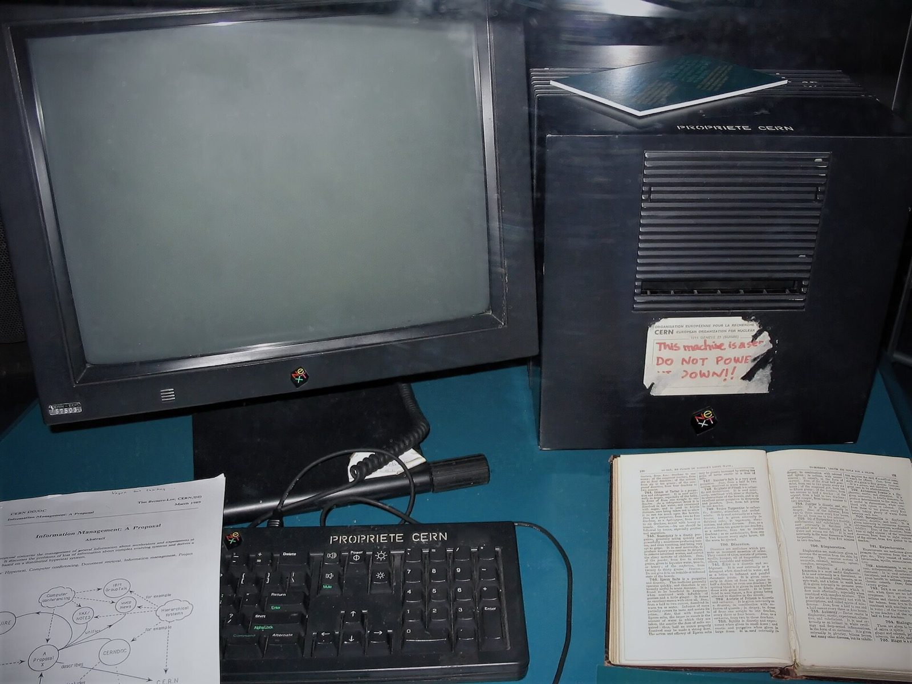
NeXT applied the same taste to the developer's experience. Interface Builder let a programmer assemble a working interface by dragging objects and wiring connections before the program ever ran. The strongest testimonial is the web itself. Tim Berners-Lee, on building the first browser and server at CERN in 1990: "I could do in a couple of months what would take more like a year on other platforms, because on the NeXT, a lot of it was done for me already. […] I just had to add hypertext, (by subclassing the Text object)."7877 When Apple bought NeXT in 1996, that stack came home and became Mac OS X.
At Macworld in January 2000, Jobs unveiled Aqua, an interface of water-drop buttons, translucency, and animation, drawn by a PDF-based imaging layer.79 His print quote to Fortune the same month: "We made the buttons on the screen look so good you'll want to lick them."5 Fortune's reporter also sat in the review meetings and recorded the method: Jobs, the only person seated, passing judgment icon by icon: "The icon for 'real estate' doesn't do anything for me at all. […] But this old-fashioned highway sign for 'cars,' now that's cool. I love it! You instantly know exactly what it means."5
On iPhone, taste became physics. Bas Ording's inertial scrolling with rubber-band overscroll (patent US 7,469,381) is, by Jobs' own account at the D8 conference in 2010, what convinced him a phone could be built from the touch work at all; he recalled thinking, per the best transcript, "My God, we can build a phone out of this."1080 The so-called Steve Jobs patent, US 7,479,949, lists him first among 25 inventors on the heuristics that decide what a finger meant.81 The skeuomorphic era of stitched leather and green felt was the metaphor doctrine of Apple's interface guidelines pushed to its limit; Scott Forstall, its executive champion, never accepted the label ("a horrible word"), and Ive's iOS 7 flattened it all in 2013, two years after Jobs died.828384
07 · The message
apple.com is the design philosophy's most public before-and-after. The panels below are typographic sketches of archived pages, not screenshots; every caption links to the real capture in the Wayback Machine.
Three links. The third is the iMac. 2,206 bytes of HTML, down from 5,133.
Introducing iPhone.
Apple reinvents the phone.
Steve Jobs
1955–2011
The sequence hides a detail: the message got fixed before the website did. By October 1997 the cluttered old homepage already wore a "Think different." masthead; the three-word redesign arrived seven months later.86 And in November 1997, on stage, Jobs opened Apple's online build-to-order store, running on WebObjects, software from his own NeXT, and addressed Michael Dell, who had suggested shutting Apple down: "we're coming after you, buddy." The store took $12 million in its first thirty days.100
The campaign that reintroduced Apple was built in about eight weeks by TBWA\Chiat\Day. Art director Craig Tanimoto coined the two words and the portrait concept; creative director Rob Siltanen wrote the manifesto's core after watching Dead Poets Society; Ken Segall tuned the long print version. Jobs first called the rough cut "advertising agency shit" and, seventeen days before air, reversed himself completely.9495 Authorship disputed Siltanen published a rebuttal after Isaacson's biography credited Jobs with much of the text.94 The print version, as Apple set it on its own site, ragged and hanging-indented like verse:
Here's to the crazy ones.
The misfits.
The rebels.
The troublemakers.
The round pegs in the square holes.
The ones who see things differently.
They're not fond of rules.
And they have no respect for the status quo.
You can praise them, disagree with them, quote them,
disbelieve them, glorify or vilify them.
About the only thing you can't do is ignore them.
Because they change things.
They invent. They imagine. They heal.
They explore. They create. They inspire.
They push the human race forward.
Maybe they have to be crazy.
How else can you stare at an empty canvas and see a work of art?
Or sit in silence and hear a song that's never been written?
Or gaze at a red planet and see a laboratory on wheels?
We make tools for these kinds of people.
While some see them as the crazy ones,
we see genius.
Because the people who are crazy enough to think
they can change the world, are the ones who do.
Apple Computer, "Think different." campaign text, apple.com/thinkdifferent, as archived in 2004.92 The TV cut, narrated by Richard Dreyfuss, runs about 100 words; Jobs recorded his own narration and killed it on the morning of the first air date: "If we go with mine, it'll become about me. And this can't be about me. It's about the company."102
Five days before the ad aired, Jobs explained the theory to Apple's employees in a town hall that survives on tape:
"To me, marketing is about values. This is a very complicated world. It's a very noisy world. And we're not going to get a chance to get people to remember much about us. No company is. And so we have to be really clear on what we want them to know about us."
"Remember, Nike sells a commodity. They sell shoes. And yet, when you think of Nike, you feel something different than a shoe company. […] What does Nike do in their advertising? They honor great athletes, and they honor great athletics. That's who they are. That's what they are about."
Steve Jobs, internal Apple meeting, Town Hall, Cupertino, September 23, 1997, from Apple's own tape of the session.93 Also from the same talk: "Apple at the core, its core value is that we believe that people with passion can change the world for the better."
The lineage ran back to 1984: Ridley Scott's Orwell-smashing Super Bowl spot, which Apple's board hated so much a director asked for a motion to fire the agency, and which aired nationally exactly once, on January 22, 1984.9798 And it ran forward through names and letters: Jobs wanted to call the 1998 machine "MacMan" until Ken Segall's "iMac" appeared silkscreened on a prototype ("He never formally accepted it"),99 and Apple's marketing typography moved from custom-condensed Apple Garamond (1984 onward, including the Think Different setting) to Myriad in 2002.101
The keynote itself was a designed product: black stage, one image per slide, a rehearsal regime staff called "the death march." The best-built bit of stagecraft he ever ran is the January 9, 2007 reveal:
"Well, today we're introducing three revolutionary products of this class. The first one is a widescreen iPod with touch controls. The second is a revolutionary mobile phone. And the third is a breakthrough Internet communications device. […] An iPod, a phone, and an Internet communicator. An iPod, a phone… are you getting it? These are not three separate devices, this is one device, and we are calling it iPhone."
Steve Jobs, Macworld keynote, January 9, 20079
08 · Retail & campus
Jobs is a named inventor on more than three hundred Apple patents, and the list is not all electronics: it includes "Staircase," "Building," and "Packaging."110 Architecture and cardboard got the product treatment.
The stores began in a rented Cupertino warehouse where Jobs and ex-Target executive Ron Johnson secretly built a full-scale prototype and critiqued it every Tuesday for six months. Near the end, Johnson realized overnight that the layout was wrong: organized by product line instead of by what people do. Jobs erupted, went silent for a seven-minute car ride, then opened the meeting himself: "Ron thinks we've got it all wrong. He thinks it should be organized not around products but instead around what people do. And you know, he's right." The launch slipped months; the first two stores opened May 19, 2001.15103 Johnson's support-desk idea got the standard first review: "That's so idiotic! It'll never work! […] You can call it the Geek Bar." A week later it was the Genius Bar, and Jobs had the trademark filed the next day.104
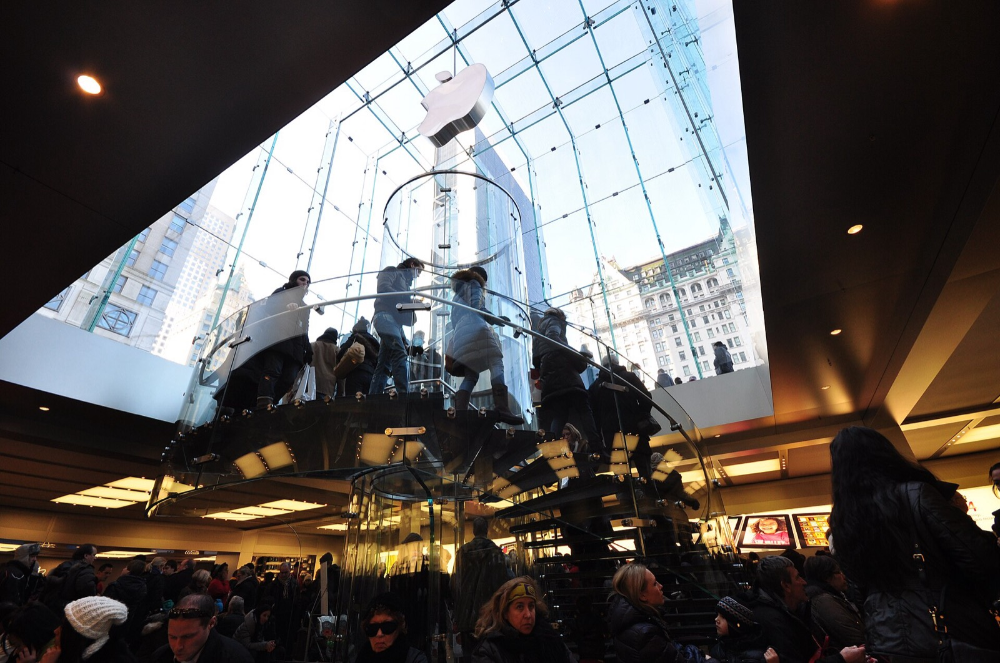
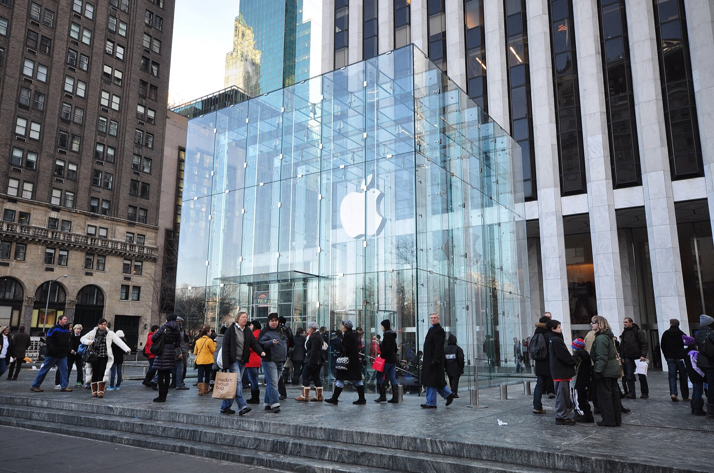
The floors are the least visible flex: from 2002 Jobs insisted on Pietra Serena sandstone from the Il Casone quarry outside Florence, the stone of Florence's sidewalks, over tinted concrete at a tenth the price. Johnson: "We select only 3% of what comes out of the mountain, because it has to have the right shading and veining and purity."105 Packaging got its own locked room in the marketing building, where a designer spent months opening hundreds of iPod box prototypes to perfect a pull-tab.111 Ive, in Isaacson: "You design a ritual of unpacking to make the product feel special. Packaging can be theater, it can create a story."15 Jobs and Ive are among the named inventors on the 2011 utility patent titled simply "Packaging."109
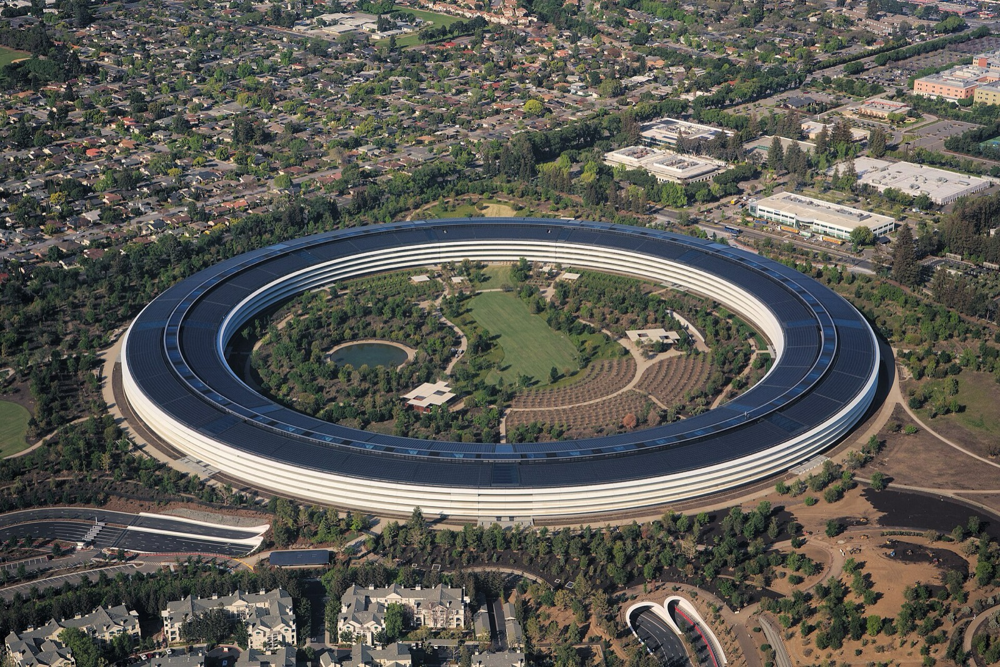
The last product was a building. Jobs quietly assembled 150 acres, much of it former HP land where his teenage summer job had been, hired Norman Foster's office, and made fifty architects restart the shapes for a year.15 On June 7, 2011, the day after his final WWDC keynote, he presented the ring to Cupertino's city council alone, in the same black sweater. "There is not a straight piece of glass in this building, it's all curved," he told them, drawing directly on the retail stores' glass work.14 To Isaacson: "It's like a spaceship has landed," and "I think we have a shot at building the best office building in the world."15 He promised to push the site's tree count past six thousand with a senior arborist hired from Stanford, and asked for apricot orchards, "part of the legacy of this valley."15 The stated goal: "I want to leave a signature campus that expresses the values of the company for generations." It was his last public appearance.112
09 · Timeline
10 · The through-line
Line the artifacts up and they stop looking like separate stories. The unfurnished living room and the three-word homepage are the same decision. The signatures inside the Mac, the matte black inside the NeXT cube, the milled-thin sleep light, and the beautiful back of the iMac are the plywood rule from Playboy, executed in four materials. The two weeks of washing-machine debate and the six months of Tuesday mornings in a fake store are the same review meeting. The Tiffany lamp he owned and the Tiffany exhibition he marched the Mac team through are one thesis: art of real quality, produced in quantity.
He said the method out loud more than once. Design was the soul of the thing, worked from the inside out; simplicity was the hard version, not the lazy one; and the standard applied to whatever happened to be in front of him: a phone, a staircase, a box, a boat.
The through-line has a price the record also shows: a mansion left open to the rain for a decade, a kitchen that took sixteen months, a Starck invoice fight after his death, engineers made to redo working circuit boards for beauty. He would likely have accepted the trade. The one framed object in Wendell Weeks' office is still the note that says "We couldn't have done it without you."
11 · Corrections
Ten stories that circulate widely and failed verification during the research for this essay.
12 · Sources
Numbered as cited above. Isaacson quotations were checked against the book text and cross-checked against published excerpts; folklore.org stories are first-person accounts by Macintosh team members, mostly Andy Hertzfeld.
All photographs on this page are from Wikimedia Commons under Public Domain, CC0, CC BY, or CC BY-SA licenses, downloaded and license-verified individually; each caption names its author and license and links to the source file. None of the pictured personal vehicles are Jobs' own items unless captioned as such. Copyrighted photographs central to the story (Diana Walker's 1982 living room, Norman Seeff's 1984 portrait, Charles O'Rear's motorcycle frame) are linked, not reproduced. The apple.com panels are typographic reconstructions of archived pages, each linked to its Wayback Machine capture.